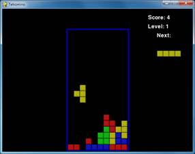
Tetromino is a Tetris clone. Differently shaped blocks (each made up of four boxes) fall from the top of the screen, and the player must guide them down to form complete rows that have no gaps in them. When a complete row is formed, the row disappears and each row above it moves down one row. The player tries to keep forming complete lines until the screen fills up and a new falling block cannot fit on the screen.
In this chapter, I have come up with a set of terms for the different things in the game program.
· Board – The board is made up of 10 x 20 spaces that the blocks fall and stack up in.
· Box – A box is a single filled-in square space on the board.
· Piece – The things that fall from the top of the board that the player can rotate and position. Each piece has a shape and is made up of 4 boxes.
· Shape – The shapes are the different types of pieces in the game. The names of the shapes are T, S, Z, J, L, I, and O.
· Template – A list of shape data structures that represents all the possible rotations of a shape. These are store in variables with names like S_SHAPE_TEMPLATE or J_SHAPE_TEMPLATE.
· Landed – When a piece has either reached the bottom of the board or is touching a box on the board, we say that the piece has landed. At that point, the next piece should start falling.
This source code can be downloaded from http://invpy.com/tetromino.py. If you get any error messages, look at the line number that is mentioned in the error message and check your code for any typos. You can also copy and paste your code into the web form at http://invpy.com/diff/tetromino to see if the differences between your code and the code in the book.
You will also need the background music files in the same folder of as the tetromino.py file. You can download them from here:
· http://invpy.com/tetrisb.mid
· http://invpy.com/tetrisc.mid
1. # Tetromino (a Tetris clone)
2. # By Al Sweigart al@inventwithpython.com
3. # http://inventwithpython.com/pygame
4. # Creative Commons BY-NC-SA 3.0 US
5.
6. import random, time, pygame, sys
7. from pygame.locals import *
8.
9. FPS = 25
10. WINDOWWIDTH = 640
11. WINDOWHEIGHT = 480
12. BOXSIZE = 20
13. BOARDWIDTH = 10
14. BOARDHEIGHT = 20
15. BLANK = '.'
16.
17. MOVESIDEWAYSFREQ = 0.15
18. MOVEDOWNFREQ = 0.1
19.
20. XMARGIN = int((WINDOWWIDTH - BOARDWIDTH * BOXSIZE) / 2)
21. TOPMARGIN = WINDOWHEIGHT - (BOARDHEIGHT * BOXSIZE) - 5
22.
23. # R G B
24. WHITE = (255, 255, 255)
25. GRAY = (185, 185, 185)
26. BLACK = ( 0, 0, 0)
27. RED = (155, 0, 0)
28. LIGHTRED = (175, 20, 20)
29. GREEN = ( 0, 155, 0)
30. LIGHTGREEN = ( 20, 175, 20)
31. BLUE = ( 0, 0, 155)
32. LIGHTBLUE = ( 20, 20, 175)
33. YELLOW = (155, 155, 0)
34. LIGHTYELLOW = (175, 175, 20)
35.
36. BORDERCOLOR = BLUE
37. BGCOLOR = BLACK
38. TEXTCOLOR = WHITE
39. TEXTSHADOWCOLOR = GRAY
40. COLORS = ( BLUE, GREEN, RED, YELLOW)
41. LIGHTCOLORS = (LIGHTBLUE, LIGHTGREEN, LIGHTRED, LIGHTYELLOW)
42. assert len(COLORS) == len(LIGHTCOLORS) # each color must have light color
43.
44. TEMPLATEWIDTH = 5
45. TEMPLATEHEIGHT = 5
46.
47. S_SHAPE_TEMPLATE = [['.....',
48. '.....',
49. '..OO.',
50. '.OO..',
51. '.....'],
52. ['.....',
53. '..O..',
54. '..OO.',
55. '...O.',
56. '.....']]
57.
58. Z_SHAPE_TEMPLATE = [['.....',
59. '.....',
60. '.OO..',
61. '..OO.',
62. '.....'],
63. ['.....',
64. '..O..',
65. '.OO..',
66. '.O...',
67. '.....']]
68.
69. I_SHAPE_TEMPLATE = [['..O..',
70. '..O..',
71. '..O..',
72. '..O..',
73. '.....'],
74. ['.....',
75. '.....',
76. 'OOOO.',
77. '.....',
78. '.....']]
79.
80. O_SHAPE_TEMPLATE = [['.....',
81. '.....',
82. '.OO..',
83. '.OO..',
84. '.....']]
85.
86. J_SHAPE_TEMPLATE = [['.....',
87. '.O...',
88. '.OOO.',
89. '.....',
90. '.....'],
91. ['.....',
92. '..OO.',
93. '..O..',
94. '..O..',
95. '.....'],
96. ['.....',
97. '.....',
98. '.OOO.',
99. '...O.',
100. '.....'],
101. ['.....',
102. '..O..',
103. '..O..',
104. '.OO..',
105. '.....']]
106.
107. L_SHAPE_TEMPLATE = [['.....',
108. '...O.',
109. '.OOO.',
110. '.....',
111. '.....'],
112. ['.....',
113. '..O..',
114. '..O..',
115. '..OO.',
116. '.....'],
117. ['.....',
118. '.....',
119. '.OOO.',
120. '.O...',
121. '.....'],
122. ['.....',
123. '.OO..',
124. '..O..',
125. '..O..',
126. '.....']]
127.
128. T_SHAPE_TEMPLATE = [['.....',
129. '..O..',
130. '.OOO.',
131. '.....',
132. '.....'],
133. ['.....',
134. '..O..',
135. '..OO.',
136. '..O..',
137. '.....'],
138. ['.....',
139. '.....',
140. '.OOO.',
141. '..O..',
142. '.....'],
143. ['.....',
144. '..O..',
145. '.OO..',
146. '..O..',
147. '.....']]
148.
149. SHAPES = {'S': S_SHAPE_TEMPLATE,
150. 'Z': Z_SHAPE_TEMPLATE,
151. 'J': J_SHAPE_TEMPLATE,
152. 'L': L_SHAPE_TEMPLATE,
153. 'I': I_SHAPE_TEMPLATE,
154. 'O': O_SHAPE_TEMPLATE,
155. 'T': T_SHAPE_TEMPLATE}
156.
157.
158. def main():
159. global FPSCLOCK, DISPLAYSURF, BASICFONT, BIGFONT
160. pygame.init()
161. FPSCLOCK = pygame.time.Clock()
162. DISPLAYSURF = pygame.display.set_mode((WINDOWWIDTH, WINDOWHEIGHT))
163. BASICFONT = pygame.font.Font('freesansbold.ttf', 18)
164. BIGFONT = pygame.font.Font('freesansbold.ttf', 100)
165. pygame.display.set_caption('Tetromino')
166.
167. showTextScreen('Tetromino')
168. while True: # game loop
169. if random.randint(0, 1) == 0:
170. pygame.mixer.music.load('tetrisb.mid')
171. else:
172. pygame.mixer.music.load('tetrisc.mid')
173. pygame.mixer.music.play(-1, 0.0)
174. runGame()
175. pygame.mixer.music.stop()
176. showTextScreen('Game Over')
177.
178.
179. def runGame():
180. # setup variables for the start of the game
181. board = getBlankBoard()
182. lastMoveDownTime = time.time()
183. lastMoveSidewaysTime = time.time()
184. lastFallTime = time.time()
185. movingDown = False # note: there is no movingUp variable
186. movingLeft = False
187. movingRight = False
188. score = 0
189. level, fallFreq = calculateLevelAndFallFreq(score)
190.
191. fallingPiece = getNewPiece()
192. nextPiece = getNewPiece()
193.
194. while True: # main game loop
195. if fallingPiece == None:
196. # No falling piece in play, so start a new piece at the top
197. fallingPiece = nextPiece
198. nextPiece = getNewPiece()
199. lastFallTime = time.time() # reset lastFallTime
200.
201. if not isValidPosition(board, fallingPiece):
202. return # can't fit a new piece on the board, so game over
203.
204. checkForQuit()
205. for event in pygame.event.get(): # event handling loop
206. if event.type == KEYUP:
207. if (event.key == K_p):
208. # Pausing the game
209. DISPLAYSURF.fill(BGCOLOR)
210. pygame.mixer.music.stop()
211. showTextScreen('Paused') # pause until a key press
212. pygame.mixer.music.play(-1, 0.0)
213. lastFallTime = time.time()
214. lastMoveDownTime = time.time()
215. lastMoveSidewaysTime = time.time()
216. elif (event.key == K_LEFT or event.key == K_a):
217. movingLeft = False
218. elif (event.key == K_RIGHT or event.key == K_d):
219. movingRight = False
220. elif (event.key == K_DOWN or event.key == K_s):
221. movingDown = False
222.
223. elif event.type == KEYDOWN:
224. # moving the block sideways
225. if (event.key == K_LEFT or event.key == K_a) and isValidPosition(board, fallingPiece, adjX=-1):
226. fallingPiece['x'] -= 1
227. movingLeft = True
228. movingRight = False
229. lastMoveSidewaysTime = time.time()
230.
231. elif (event.key == K_RIGHT or event.key == K_d) and isValidPosition(board, fallingPiece, adjX=1):
232. fallingPiece['x'] += 1
233. movingRight = True
234. movingLeft = False
235. lastMoveSidewaysTime = time.time()
236.
237. # rotating the block (if there is room to rotate)
238. elif (event.key == K_UP or event.key == K_w):
239. fallingPiece['rotation'] = (fallingPiece['rotation'] + 1) % len(SHAPES[fallingPiece['shape']])
240. if not isValidPosition(board, fallingPiece):
241. fallingPiece['rotation'] = (fallingPiece['rotation'] - 1) % len(SHAPES[fallingPiece['shape']])
242. elif (event.key == K_q): # rotate the other direction
243. fallingPiece['rotation'] = (fallingPiece['rotation'] - 1) % len(SHAPES[fallingPiece['shape']])
244. if not isValidPosition(board, fallingPiece):
245. fallingPiece['rotation'] = (fallingPiece['rotation'] + 1) % len(SHAPES[fallingPiece['shape']])
246.
247. # making the block fall faster with the down key
248. elif (event.key == K_DOWN or event.key == K_s):
249. movingDown = True
250. if isValidPosition(board, fallingPiece, adjY=1):
251. fallingPiece['y'] += 1
252. lastMoveDownTime = time.time()
253.
254. # move the current block all the way down
255. elif event.key == K_SPACE:
256. movingDown = False
257. movingLeft = False
258. movingRight = False
259. for i in range(1, BOARDHEIGHT):
260. if not isValidPosition(board, fallingPiece, adjY=i):
261. break
262. fallingPiece['y'] += i - 1
263.
264. # handle moving the block because of user input
265. if (movingLeft or movingRight) and time.time() - lastMoveSidewaysTime > MOVESIDEWAYSFREQ:
266. if movingLeft and isValidPosition(board, fallingPiece, adjX=-1):
267. fallingPiece['x'] -= 1
268. elif movingRight and isValidPosition(board, fallingPiece, adjX=1):
269. fallingPiece['x'] += 1
270. lastMoveSidewaysTime = time.time()
271.
272. if movingDown and time.time() - lastMoveDownTime > MOVEDOWNFREQ and isValidPosition(board, fallingPiece, adjY=1):
273. fallingPiece['y'] += 1
274. lastMoveDownTime = time.time()
275.
276. # let the piece fall if it is time to fall
277. if time.time() - lastFallTime > fallFreq:
278. # see if the piece has landed
279. if not isValidPosition(board, fallingPiece, adjY=1):
280. # falling piece has landed, set it on the board
281. addToBoard(board, fallingPiece)
282. score += removeCompleteLines(board)
283. level, fallFreq = calculateLevelAndFallFreq(score)
284. fallingPiece = None
285. else:
286. # piece did not land, just move the block down
287. fallingPiece['y'] += 1
288. lastFallTime = time.time()
289.
290. # drawing everything on the screen
291. DISPLAYSURF.fill(BGCOLOR)
292. drawBoard(board)
293. drawStatus(score, level)
294. drawNextPiece(nextPiece)
295. if fallingPiece != None:
296. drawPiece(fallingPiece)
297.
298. pygame.display.update()
299. FPSCLOCK.tick(FPS)
300.
301.
302. def makeTextObjs(text, font, color):
303. surf = font.render(text, True, color)
304. return surf, surf.get_rect()
305.
306.
307. def terminate():
308. pygame.quit()
309. sys.exit()
310.
311.
312. def checkForKeyPress():
313. # Go through event queue looking for a KEYUP event.
314. # Grab KEYDOWN events to remove them from the event queue.
315. checkForQuit()
316.
317. for event in pygame.event.get([KEYDOWN, KEYUP]):
318. if event.type == KEYDOWN:
319. continue
320. return event.key
321. return None
322.
323.
324. def showTextScreen(text):
325. # This function displays large text in the
326. # center of the screen until a key is pressed.
327. # Draw the text drop shadow
328. titleSurf, titleRect = makeTextObjs(text, BIGFONT, TEXTSHADOWCOLOR)
329. titleRect.center = (int(WINDOWWIDTH / 2), int(WINDOWHEIGHT / 2))
330. DISPLAYSURF.blit(titleSurf, titleRect)
331.
332. # Draw the text
333. titleSurf, titleRect = makeTextObjs(text, BIGFONT, TEXTCOLOR)
334. titleRect.center = (int(WINDOWWIDTH / 2) - 3, int(WINDOWHEIGHT / 2) - 3)
335. DISPLAYSURF.blit(titleSurf, titleRect)
336.
337. # Draw the additional "Press a key to play." text.
338. pressKeySurf, pressKeyRect = makeTextObjs('Press a key to play.', BASICFONT, TEXTCOLOR)
339. pressKeyRect.center = (int(WINDOWWIDTH / 2), int(WINDOWHEIGHT / 2) + 100)
340. DISPLAYSURF.blit(pressKeySurf, pressKeyRect)
341.
342. while checkForKeyPress() == None:
343. pygame.display.update()
344. FPSCLOCK.tick()
345.
346.
347. def checkForQuit():
348. for event in pygame.event.get(QUIT): # get all the QUIT events
349. terminate() # terminate if any QUIT events are present
350. for event in pygame.event.get(KEYUP): # get all the KEYUP events
351. if event.key == K_ESCAPE:
352. terminate() # terminate if the KEYUP event was for the Esc key
353. pygame.event.post(event) # put the other KEYUP event objects back
354.
355.
356. def calculateLevelAndFallFreq(score):
357. # Based on the score, return the level the player is on and
358. # how many seconds pass until a falling piece falls one space.
359. level = int(score / 10) + 1
360. fallFreq = 0.27 - (level * 0.02)
361. return level, fallFreq
362.
363. def getNewPiece():
364. # return a random new piece in a random rotation and color
365. shape = random.choice(list(SHAPES.keys()))
366. newPiece = {'shape': shape,
367. 'rotation': random.randint(0, len(SHAPES[shape]) - 1),
368. 'x': int(BOARDWIDTH / 2) - int(TEMPLATEWIDTH / 2),
369. 'y': -2, # start it above the board (i.e. less than 0)
370. 'color': random.randint(0, len(COLORS)-1)}
371. return newPiece
372.
373.
374. def addToBoard(board, piece):
375. # fill in the board based on piece's location, shape, and rotation
376. for x in range(TEMPLATEWIDTH):
377. for y in range(TEMPLATEHEIGHT):
378. if SHAPES[piece['shape']][piece['rotation']][y][x] != BLANK:
379. board[x + piece['x']][y + piece['y']] = piece['color']
380.
381.
382. def getBlankBoard():
383. # create and return a new blank board data structure
384. board = []
385. for i in range(BOARDWIDTH):
386. board.append([BLANK] * BOARDHEIGHT)
387. return board
388.
389.
390. def isOnBoard(x, y):
391. return x >= 0 and x < BOARDWIDTH and y < BOARDHEIGHT
392.
393.
394. def isValidPosition(board, piece, adjX=0, adjY=0):
395. # Return True if the piece is within the board and not colliding
396. for x in range(TEMPLATEWIDTH):
397. for y in range(TEMPLATEHEIGHT):
398. isAboveBoard = y + piece['y'] + adjY < 0
399. if isAboveBoard or SHAPES[piece['shape']][piece['rotation']][y][x] == BLANK:
400. continue
401. if not isOnBoard(x + piece['x'] + adjX, y + piece['y'] + adjY):
402. return False
403. if board[x + piece['x'] + adjX][y + piece['y'] + adjY] != BLANK:
404. return False
405. return True
406.
407. def isCompleteLine(board, y):
408. # Return True if the line filled with boxes with no gaps.
409. for x in range(BOARDWIDTH):
410. if board[x][y] == BLANK:
411. return False
412. return True
413.
414.
415. def removeCompleteLines(board):
416. # Remove any completed lines on the board, move everything above them down, and return the number of complete lines.
417. numLinesRemoved = 0
418. y = BOARDHEIGHT - 1 # start y at the bottom of the board
419. while y >= 0:
420. if isCompleteLine(board, y):
421. # Remove the line and pull boxes down by one line.
422. for pullDownY in range(y, 0, -1):
423. for x in range(BOARDWIDTH):
424. board[x][pullDownY] = board[x][pullDownY-1]
425. # Set very top line to blank.
426. for x in range(BOARDWIDTH):
427. board[x][0] = BLANK
428. numLinesRemoved += 1
429. # Note on the next iteration of the loop, y is the same.
430. # This is so that if the line that was pulled down is also
431. # complete, it will be removed.
432. else:
433. y -= 1 # move on to check next row up
434. return numLinesRemoved
435.
436.
437. def convertToPixelCoords(boxx, boxy):
438. # Convert the given xy coordinates of the board to xy
439. # coordinates of the location on the screen.
440. return (XMARGIN + (boxx * BOXSIZE)), (TOPMARGIN + (boxy * BOXSIZE))
441.
442.
443. def drawBox(boxx, boxy, color, pixelx=None, pixely=None):
444. # draw a single box (each tetromino piece has four boxes)
445. # at xy coordinates on the board. Or, if pixelx & pixely
446. # are specified, draw to the pixel coordinates stored in
447. # pixelx & pixely (this is used for the "Next" piece).
448. if color == BLANK:
449. return
450. if pixelx == None and pixely == None:
451. pixelx, pixely = convertToPixelCoords(boxx, boxy)
452. pygame.draw.rect(DISPLAYSURF, COLORS[color], (pixelx + 1, pixely + 1, BOXSIZE - 1, BOXSIZE - 1))
453. pygame.draw.rect(DISPLAYSURF, LIGHTCOLORS[color], (pixelx + 1, pixely + 1, BOXSIZE - 4, BOXSIZE - 4))
454.
455.
456. def drawBoard(board):
457. # draw the border around the board
458. pygame.draw.rect(DISPLAYSURF, BORDERCOLOR, (XMARGIN - 3, TOPMARGIN - 7, (BOARDWIDTH * BOXSIZE) + 8, (BOARDHEIGHT * BOXSIZE) + 8), 5)
459.
460. # fill the background of the board
461. pygame.draw.rect(DISPLAYSURF, BGCOLOR, (XMARGIN, TOPMARGIN, BOXSIZE * BOARDWIDTH, BOXSIZE * BOARDHEIGHT))
462. # draw the individual boxes on the board
463. for x in range(BOARDWIDTH):
464. for y in range(BOARDHEIGHT):
465. drawBox(x, y, board[x][y])
466.
467.
468. def drawStatus(score, level):
469. # draw the score text
470. scoreSurf = BASICFONT.render('Score: %s' % score, True, TEXTCOLOR)
471. scoreRect = scoreSurf.get_rect()
472. scoreRect.topleft = (WINDOWWIDTH - 150, 20)
473. DISPLAYSURF.blit(scoreSurf, scoreRect)
474.
475. # draw the level text
476. levelSurf = BASICFONT.render('Level: %s' % level, True, TEXTCOLOR)
477. levelRect = levelSurf.get_rect()
478. levelRect.topleft = (WINDOWWIDTH - 150, 50)
479. DISPLAYSURF.blit(levelSurf, levelRect)
480.
481.
482. def drawPiece(piece, pixelx=None, pixely=None):
483. shapeToDraw = SHAPES[piece['shape']][piece['rotation']]
484. if pixelx == None and pixely == None:
485. # if pixelx & pixely hasn't been specified, use the location stored in the piece data structure
486. pixelx, pixely = convertToPixelCoords(piece['x'], piece['y'])
487.
488. # draw each of the blocks that make up the piece
489. for x in range(TEMPLATEWIDTH):
490. for y in range(TEMPLATEHEIGHT):
491. if shapeToDraw[y][x] != BLANK:
492. drawBox(None, None, piece['color'], pixelx + (x * BOXSIZE), pixely + (y * BOXSIZE))
493.
494.
495. def drawNextPiece(piece):
496. # draw the "next" text
497. nextSurf = BASICFONT.render('Next:', True, TEXTCOLOR)
498. nextRect = nextSurf.get_rect()
499. nextRect.topleft = (WINDOWWIDTH - 120, 80)
500. DISPLAYSURF.blit(nextSurf, nextRect)
501. # draw the "next" piece
502. drawPiece(piece, pixelx=WINDOWWIDTH-120, pixely=100)
503.
504.
505. if __name__ == '__main__':
506. main()
1. # Tetromino (a Tetris clone)
2. # By Al Sweigart al@inventwithpython.com
3. # http://inventwithpython.com/pygame
4. # Creative Commons BY-NC-SA 3.0 US
5.
6. import random, time, pygame, sys
7. from pygame.locals import *
8.
9. FPS = 25
10. WINDOWWIDTH = 640
11. WINDOWHEIGHT = 480
12. BOXSIZE = 20
13. BOARDWIDTH = 10
14. BOARDHEIGHT = 20
15. BLANK = '.'
These are the constants used by our Tetromino game. Each box is a square that is 20 pixels wide and high. The board itself is 10 boxes wide and 20 boxes tall. The BLANK constant will be used as a value to represent blank spaces in the board’s data structure.
17. MOVESIDEWAYSFREQ = 0.15
18. MOVEDOWNFREQ = 0.1
Every time the player pushes the left or right arrow key down, the falling piece should move one box over to the left or right, respectively. However, the player can also hold down the left or right arrow key to keep moving the falling piece. The MOVESIDEWAYSFREQ constant will set it so that every 0.15 seconds that passes with the left or right arrow key held down, the piece will move another space over.
The MOVEDOWNFREQ constant is the same thing except it tells how frequently the piece drops by one box while the player has the down arrow key held down.
20. XMARGIN = int((WINDOWWIDTH - BOARDWIDTH * BOXSIZE) / 2)
21. TOPMARGIN = WINDOWHEIGHT - (BOARDHEIGHT * BOXSIZE) - 5
The program needs to calculate how many pixels are to the left and right side of the board to use later in the program. WINDOWWIDTH is the total number of pixels wide the entire window is. The board is BOARDWIDTH boxes wide and each box is BOXSIZE pixels wide. If we subtract BOXSIZE pixels from this for each of the boxes wide in the board (which is BOARDWIDTH * BOXSIZE), we’ll have the size of the margin to the left and right of the board. If we divide this by 2, then we will have the size of just one margin. Since the margins are the same size, we can use XMARGIN for either the left-side or right-side margin.
We can calculate the size of the space between the top of the board and the top of the window in a similar manner. The board will be drawn 5 pixels above the bottom of the window, so 5 is subtracted from topmargin to account for this.
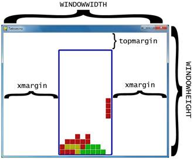
23. # R G B
24. WHITE = (255, 255, 255)
25. GRAY = (185, 185, 185)
26. BLACK = ( 0, 0, 0)
27. RED = (155, 0, 0)
28. LIGHTRED = (175, 20, 20)
29. GREEN = ( 0, 155, 0)
30. LIGHTGREEN = ( 20, 175, 20)
31. BLUE = ( 0, 0, 155)
32. LIGHTBLUE = ( 20, 20, 175)
33. YELLOW = (155, 155, 0)
34. LIGHTYELLOW = (175, 175, 20)
35.
36. BORDERCOLOR = BLUE
37. BGCOLOR = BLACK
38. TEXTCOLOR = WHITE
39. TEXTSHADOWCOLOR = GRAY
40. COLORS = ( BLUE, GREEN, RED, YELLOW)
41. LIGHTCOLORS = (LIGHTBLUE, LIGHTGREEN, LIGHTRED, LIGHTYELLOW)
42. assert len(COLORS) == len(LIGHTCOLORS) # each color must have light color
The pieces will come in four colors: blue, green, red, and yellow. When we draw the boxes though, there will be a thin highlight on the box in a lighter color. So this means we need to create light blue, light green, light red, and light yellow colors as well.
Each of these four colors will be stored in tuples named COLORS (for the normal colors) and LIGHTCOLORS (for the lighter colors).
44. TEMPLATEWIDTH = 5
45. TEMPLATEHEIGHT = 5
46.
47. S_SHAPE_TEMPLATE = [['.....',
48. '.....',
49. '..OO.',
50. '.OO..',
51. '.....'],
52. ['.....',
53. '..O..',
54. '..OO.',
55. '...O.',
56. '.....']]
57.
58. Z_SHAPE_TEMPLATE = [['.....',
59. '.....',
60. '.OO..',
61. '..OO.',
62. '.....'],
63. ['.....',
64. '..O..',
65. '.OO..',
66. '.O...',
67. '.....']]
68.
69. I_SHAPE_TEMPLATE = [['..O..',
70. '..O..',
71. '..O..',
72. '..O..',
73. '.....'],
74. ['.....',
75. '.....',
76. 'OOOO.',
77. '.....',
78. '.....']]
79.
80. O_SHAPE_TEMPLATE = [['.....',
81. '.....',
82. '.OO..',
83. '.OO..',
84. '.....']]
85.
86. J_SHAPE_TEMPLATE = [['.....',
87. '.O...',
88. '.OOO.',
89. '.....',
90. '.....'],
91. ['.....',
92. '..OO.',
93. '..O..',
94. '..O..',
95. '.....'],
96. ['.....',
97. '.....',
98. '.OOO.',
99. '...O.',
100. '.....'],
101. ['.....',
102. '..O..',
103. '..O..',
104. '.OO..',
105. '.....']]
106.
107. L_SHAPE_TEMPLATE = [['.....',
108. '...O.',
109. '.OOO.',
110. '.....',
111. '.....'],
112. ['.....',
113. '..O..',
114. '..O..',
115. '..OO.',
116. '.....'],
117. ['.....',
118. '.....',
119. '.OOO.',
120. '.O...',
121. '.....'],
122. ['.....',
123. '.OO..',
124. '..O..',
125. '..O..',
126. '.....']]
127.
128. T_SHAPE_TEMPLATE = [['.....',
129. '..O..',
130. '.OOO.',
131. '.....',
132. '.....'],
133. ['.....',
134. '..O..',
135. '..OO.',
136. '..O..',
137. '.....'],
138. ['.....',
139. '.....',
140. '.OOO.',
141. '..O..',
142. '.....'],
143. ['.....',
144. '..O..',
145. '.OO..',
146. '..O..',
147. '.....']]
Our game program needs to know how each of the shapes are shaped, including for all of their possible rotations. In order to do this, we will create lists of lists of strings. The inner list of strings will represent a single rotation of a shape, like this:
['.....',
'.....',
'..OO.',
'.OO..',
'.....']
We will write the rest of our code so that it interprets a list of strings like the one above to represent a shape where the periods are empty spaces and the O’s are boxes, like this:
You can see that this list is spread across many lines in the file editor. This is perfectly valid Python, because the Python interpreter realizes that until it sees the ] closing square bracket, the list isn’t finished. The indentation doesn’t matter because Python knows you won’t have different indentation for a new block in the middle of a list. This code below works just fine:
spam = ['hello', 3.14, 'world', 42, 10, 'fuzz']
eggs = ['hello', 3.14,
'world'
, 42,
10, 'fuzz']
Though, of course, the code for the eggs list would be much more readable if we lined up all the items in the list or put on a single line like spam.
Normally, splitting a line of code across multiple lines in the file editor would require putting a \ character at the end of the line. The \ tells Python, “This code continues onto the next line.” (This slash was first used in the Sliding Puzzle game in the isValidMove() function.)
We will make “template” data structures of the shapes by creating a list of these list of strings, and store them in variables such as S_SHAPE_TEMPLATE. This way, len(S_SHAPE_TEMPLATE) will represent how many possible rotations there are for the S shape, and S_SHAPE_TEMPLATE[0] will represent the S shape’s first possible rotation. Lines 47 to 147 will create “template” data structures for each of the shapes.
Imagine that each possible piece in a tiny 5 x 5 board of empty space, with some of the spaces on the board filled in with boxes. The following expressions that use S_SHAPE_TEMPLATE[0] are True:
S_SHAPE_TEMPLATE[0][2][2] == 'O'
S_SHAPE_TEMPLATE[0][2][3] == 'O'
S_SHAPE_TEMPLATE[0][3][1] == 'O'
S_SHAPE_TEMPLATE[0][3][2] == 'O'
If we represented this shape on paper, it would look something like this:
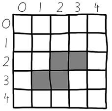
This is how we can represent things like Tetromino pieces as Python values such as strings and lists. The TEMPLATEWIDTH and TEMPLATEHEIGHT constants simply set how large each row and column for each shape’s rotation should be. (The templates will always be 5x5.)
149. SHAPES = {'S': S_SHAPE_TEMPLATE,
150. 'Z': Z_SHAPE_TEMPLATE,
151. 'J': J_SHAPE_TEMPLATE,
152. 'L': L_SHAPE_TEMPLATE,
153. 'I': I_SHAPE_TEMPLATE,
154. 'O': O_SHAPE_TEMPLATE,
155. 'T': T_SHAPE_TEMPLATE}
The SHAPES variable will be a dictionary that stores all of the different templates. Because each template has all the possible rotations of a single shape, this means that the SHAPES variable contains all possible rotations of every possible shape. This will be the data structure that contains all of the shape data in our game.
158. def main():
159. global FPSCLOCK, DISPLAYSURF, BASICFONT, BIGFONT
160. pygame.init()
161. FPSCLOCK = pygame.time.Clock()
162. DISPLAYSURF = pygame.display.set_mode((WINDOWWIDTH, WINDOWHEIGHT))
163. BASICFONT = pygame.font.Font('freesansbold.ttf', 18)
164. BIGFONT = pygame.font.Font('freesansbold.ttf', 100)
165. pygame.display.set_caption('Tetromino')
166.
167. showTextScreen('Tetromino')
The main() function handles creating some more global constants and showing the start screen that appears when the program is run.
168. while True: # game loop
169. if random.randint(0, 1) == 0:
170. pygame.mixer.music.load('tetrisb.mid')
171. else:
172. pygame.mixer.music.load('tetrisc.mid')
173. pygame.mixer.music.play(-1, 0.0)
174. runGame()
175. pygame.mixer.music.stop()
176. showTextScreen('Game Over')
The code for the actual game is all in runGame(). The main() function here simply randomly decides what background music to start playing (either the tetrisb.mid or tetrisc.mid MIDI music file), then calls runGame() to begin the game. When the player loses, runGame() will return to main(), which then stops the background music and displays the game over screen.
When the player presses a key, the showTextScreen() function that displays the game over screen will return. The game loop will loop back to the beginning at line 169 and start another game.
179. def runGame():
180. # setup variables for the start of the game
181. board = getBlankBoard()
182. lastMoveDownTime = time.time()
183. lastMoveSidewaysTime = time.time()
184. lastFallTime = time.time()
185. movingDown = False # note: there is no movingUp variable
186. movingLeft = False
187. movingRight = False
188. score = 0
189. level, fallFreq = calculateLevelAndFallFreq(score)
190.
191. fallingPiece = getNewPiece()
192. nextPiece = getNewPiece()
Before the game begins and pieces start falling, we need to initialize some variables to their start-of-game values. On line 191 the fallingPiece variable will be set to the currently falling piece that can be rotated by the player. On line 192 the nextPiece variable will be set to the piece that shows up in the “Next” part of the screen so that player knows what piece is coming up after setting the falling piece.
194. while True: # main game loop
195. if fallingPiece == None:
196. # No falling piece in play, so start a new piece at the top
197. fallingPiece = nextPiece
198. nextPiece = getNewPiece()
199. lastFallTime = time.time() # reset lastFallTime
200.
201. if not isValidPosition(board, fallingPiece):
202. return # can't fit a new piece on the board, so game over
203.
204. checkForQuit()
The main game loop that starts on line 194 handles all of the code for the main part of the game when pieces are falling to the bottom. The fallingPiece variable is set to None after the falling piece has landed. This means that the piece in nextPiece should be copied to the fallingPiece variable, and a random new piece should be put into the nextPiece variable. A new piece can be generated from the getNewPiece() function. The lastFallTime variable is also reset to the current time so that the piece will fall in however many seconds is in fallFreq.
The pieces that getNewPiece() are positioned a little bit above the board, usually with part of the piece already on the board. But if this is an invalid position because the board is already filled up there (in which case the isValidPosition() call on line 201 will return False), then we know that the board is full and the player should lose the game. When this happens, the runGame() function returns.
205. for event in pygame.event.get(): # event handling loop
206. if event.type == KEYUP:
The event handling loop takes care of when the player rotates the falling piece, moves the falling piece, or pauses the game.
207. if (event.key == K_p):
208. # Pausing the game
209. DISPLAYSURF.fill(BGCOLOR)
210. pygame.mixer.music.stop()
211. showTextScreen('Paused') # pause until a key press
212. pygame.mixer.music.play(-1, 0.0)
213. lastFallTime = time.time()
214. lastMoveDownTime = time.time()
215. lastMoveSidewaysTime = time.time()
If the player has pressed the P key, then the game should pause. We need to hide the board from the player (otherwise the player could cheat by pausing the game and taking time to decide where to move the piece).
The code blanks out the display Surface with a call to DISPLAYSURF.fill(BGCOLOR) and stops the music. The showTextScreen() function is called to display the “Paused” text and wait for the player to press a key to continue.
Once the player has pressed a key, showTextScreen() will return. Line 212 will restart the background music. Also, since a large amount of time could have passed since the player paused the game, the lastFallTime, lastMoveDownTime, and lastMoveSidewaysTime variables should all be reset to the current time (which is done on lines 213 to 215).
216. elif (event.key == K_LEFT or event.key == K_a):
217. movingLeft = False
218. elif (event.key == K_RIGHT or event.key == K_d):
219. movingRight = False
220. elif (event.key == K_DOWN or event.key == K_s):
221. movingDown = False
Letting up on one of the arrow keys (or the WASD keys) will set the movingLeft, movingRight, or movingDown variables back to False, indicating that the player no longer wants to move the piece in those directions. The code later will handle what to do based on the Boolean values inside these “moving” variables. Note that the up arrow and W keys are used for rotating the piece, not moving the piece up. This is why there is no movingUp variable.
223. elif event.type == KEYDOWN:
224. # moving the block sideways
225. if (event.key == K_LEFT or event.key == K_a) and isValidPosition(board, fallingPiece, adjX=-1):
226. fallingPiece['x'] -= 1
227. movingLeft = True
228. movingRight = False
229. lastMoveSidewaysTime = time.time()
When the left arrow key is pressed down (and moving to the left is a valid move for the falling piece, as determined by the call to isValidPosition()), then we should change the position to one space to the left by subtracting the value of fallingPiece['x'] by 1. The isValidPosition() function has optional parameters called adjX and adjY. Normally the isValidPosition() function checks the position of the data provided by the piece object that is passed for the second parameter. However, sometimes we don’t want to check where the piece is currently located, but rather a few spaces over from that position.
If we pass -1 for the adjX (a short name for “adjusted X”), then it doesn’t check the validity of the position in the piece’s data structure, but rather if the position of where the piece would be if it was one space to the left. Passing 1 for adjX would check one space to the right. There is also an adjY optional parameter. Passing -1 for adjY checks one space above where the piece is currently positioned, and passing a value like 3 for adjY would check three spaces down from where the piece is.
The movingLeft variable is set to True, and just to make sure the falling piece won’t move both left and right, the movingRight variable is set to False on line 228. The lastMoveSidewaysTime variable will be updated to the current time on line 229.
These variables are set so that the player can just hold down the arrow key to keep moving the piece over. If the movingLeft variable is set to True, the program can know that the left arrow key (or A key) has been pressed and not yet let go. And if 0.15 seconds (the number stored in MOVESIDEWAYSFREQ) has passed since the time stored in lastMoveSidewaysTime, then it is time for the program to move the falling piece to the left again.
The lastMoveSidewaysTime works just like how the lastClickTime variable did in the Simulate chapter.
231. elif (event.key == K_RIGHT or event.key == K_d) and isValidPosition(board, fallingPiece, adjX=1):
232. fallingPiece['x'] += 1
233. movingRight = True
234. movingLeft = False
235. lastMoveSidewaysTime = time.time()
The code on lines 231 to 235 is almost identical to lines 225 to 229, except that it handles moving the falling piece to the right when the right arrow key (or D key) has been pressed.
237. # rotating the block (if there is room to rotate)
238. elif (event.key == K_UP or event.key == K_w):
239. fallingPiece['rotation'] = (fallingPiece['rotation'] + 1) % len(SHAPES[fallingPiece['shape']])
The up arrow key (or W key) will rotate the falling piece to its next rotation. All the code has to do is increment the 'rotation' key’s value in the fallingPiece dictionary by 1. However, if incrementing the 'rotation' key’s value makes it larger than the total number of rotations, then “modding” by the total number of possible rotations for that shape (which is what len(SHAPES[fallingPiece['shape']]) is) then it will “roll over” to 0.
Here’s an example of this modding with the J shape, which has 4 possible rotations:
>>> 0 % 4
0
>>> 1 % 4
1
>>> 2 % 4
2
>>> 3 % 4
3
>>> 5 % 4
1
>>> 6 % 4
2
>>> 7 % 4
3
>>> 8 % 4
0
>>>
240. if not isValidPosition(board, fallingPiece):
241. fallingPiece['rotation'] = (fallingPiece['rotation'] - 1) % len(SHAPES[fallingPiece['shape']])
If the new rotated position is not valid because it overlaps some boxes already on the board, then we want to switch it back to the original rotation by subtracting 1 from fallingPiece['rotation']. We can also mod it by len(SHAPES[fallingPiece['shape']]) so that if the new value is -1, the modding will change it back to the last rotation in the list. Here’s an example of modding a negative number:
>>> -1 % 4
3
242. elif (event.key == K_q): # rotate the other direction
243. fallingPiece['rotation'] = (fallingPiece['rotation'] - 1) % len(SHAPES[fallingPiece['shape']])
244. if not isValidPosition(board, fallingPiece):
245. fallingPiece['rotation'] = (fallingPiece['rotation'] + 1) % len(SHAPES[fallingPiece['shape']])
Lines 242 to 245 do the same thing 238 to 241, except they handle the case where the player has pressed the Q key which rotates the piece in the opposite direction. In this case, we subtract 1 from fallingPiece['rotation'] (which is done on line 243) instead of adding 1.
247. # making the block fall faster with the down key
248. elif (event.key == K_DOWN or event.key == K_s):
249. movingDown = True
250. if isValidPosition(board, fallingPiece, adjY=1):
251. fallingPiece['y'] += 1
252. lastMoveDownTime = time.time()
If the down arrow or S key is pressed down, then the player wants the piece to fall faster than normal. Line 251 moves the piece down one space on the board (but only if it is a valid space). The movingDown variable is set to True and lastMoveDownTime is reset to the current time. These variables will be checked later so that the piece keeps falling at the faster rate as long as the down arrow or S key is held down.
254. # move the current block all the way down
255. elif event.key == K_SPACE:
256. movingDown = False
257. movingLeft = False
258. movingRight = False
259. for i in range(1, BOARDHEIGHT):
260. if not isValidPosition(board, fallingPiece, adjY=i):
261. break
262. fallingPiece['y'] += i - 1
When the player presses the space key the falling piece will immediately drop down as far as it can go on the board and land. The program first needs to find out how many spaces the piece can move until it lands.
Lines 256 to 258 will set all the moving variables to False (which makes the code in later parts of the programming think that the user has let up on any arrow keys that were held down). This is done because this code will move the piece to the absolute bottom and begin falling the next piece, and we don’t want to surprise the player by having those pieces immediately start moving just because they were holding down an arrow key when they hit the space key.
To find the farthest that the piece can fall, we should first call isValidPosition() and pass the integer 1 for the adjY parameter. If isValidPosition() returns False, we know that the piece cannot fall any further and is already at the bottom. If isValidPosition() returns True, then we know that it can fall 1 space down.
In that case, we should call isValidPosition() with adjY set to 2. If it returns True again, we will call isValidPosition() with adjY set to 3, and so on. This is what the for loop on line 259 handles: calling isValidPosition() with increasing integer values to pass for adjY until the function call returns False. At that point, we know that the value in i is one space more past the bottom. This is why line 262 increases fallingPiece['y'] by i - 1 instead of i.
(Also note that the second parameter to range() on line 259’s for statement is set to BOARDHEIGHT because this is the maximum amount that the piece could fall before it must hit the bottom of the board.)
264. # handle moving the block because of user input
265. if (movingLeft or movingRight) and time.time() - lastMoveSidewaysTime > MOVESIDEWAYSFREQ:
266. if movingLeft and isValidPosition(board, fallingPiece, adjX=-1):
267. fallingPiece['x'] -= 1
268. elif movingRight and isValidPosition(board, fallingPiece, adjX=1):
269. fallingPiece['x'] += 1
270. lastMoveSidewaysTime = time.time()
Remember that on line 227 the movingLeft variable was set to True if the player pressed down on the left arrow key? (The same for line 233 where movingRight was set to True if the player pressed down on the right arrow key.) The moving variables were set back to False if the user let up on these keys also (see line 217 and 219).
What also happened when the player pressed down on the left or right arrow key was that the lastMoveSidewaysTime variable was set to the current time (which was the return value of time.time()). If the player continued to hold down the arrow key without letting up on it, then the movingLeft or movingRight variable would still be set to True.
If the user held down on the key for longer than 0.15 seconds (the value stored in MOVESIDEWAYSFREQ is the float 0.15) then the expression time.time() - lastMoveSidewaysTime > MOVESIDEWAYSFREQ would evaluate to True. Line 265’s condition is True if the user has both held down the arrow key and 0.15 seconds has passed, and in that case we should move the falling piece to the left or right even though the user hasn’t pressed the arrow key again.
This is very useful because it would become tiresome for the player to repeatedly hit the arrow keys to get the falling piece to move over multiple spaces on the board. Instead, they can just hold down an arrow key and the piece will keep moving over until they let up on the key. When that happens, the code on lines 216 to 221 will set the moving variable to False and the condition on line 265 will be False. That is what stops the falling piece from sliding over more.
To demonstrate why the time.time() - lastMoveSidewaysTime > MOVESIDEWAYSFREQ returns True after the number of seconds in MOVESIDEWAYSFREQ has passed, run this short program:
import time
WAITTIME = 4
begin = time.time()
while True:
now = time.time()
message = '%s, %s, %s' % (begin, now, (now - begin))
if now - begin > WAITTIME:
print(message + ' PASSED WAIT TIME!')
else:
print(message + ' Not yet...')
time.sleep(0.2)
This program has an infinite loop, so in order to terminate it, press Ctrl-C. The output of this program will look something like this:
1322106392.2, 1322106392.2, 0.0 Not yet...
1322106392.2, 1322106392.42, 0.219000101089 Not yet...
1322106392.2, 1322106392.65, 0.449000120163 Not yet...
1322106392.2, 1322106392.88, 0.680999994278 Not yet...
1322106392.2, 1322106393.11, 0.910000085831 Not yet...
1322106392.2, 1322106393.34, 1.1400001049 Not yet...
1322106392.2, 1322106393.57, 1.3710000515 Not yet...
1322106392.2, 1322106393.83, 1.6360001564 Not yet...
1322106392.2, 1322106394.05, 1.85199999809 Not yet...
1322106392.2, 1322106394.28, 2.08000016212 Not yet...
1322106392.2, 1322106394.51, 2.30900001526 Not yet...
1322106392.2, 1322106394.74, 2.54100012779 Not yet...
1322106392.2, 1322106394.97, 2.76999998093 Not yet...
1322106392.2, 1322106395.2, 2.99800014496 Not yet...
1322106392.2, 1322106395.42, 3.22699999809 Not yet...
1322106392.2, 1322106395.65, 3.45600008965 Not yet...
1322106392.2, 1322106395.89, 3.69200015068 Not yet...
1322106392.2, 1322106396.12, 3.92100000381 Not yet...
1322106392.2, 1322106396.35, 4.14899992943 PASSED WAIT TIME!
1322106392.2, 1322106396.58, 4.3789999485 PASSED WAIT TIME!
1322106392.2, 1322106396.81, 4.60700011253 PASSED WAIT TIME!
1322106392.2, 1322106397.04, 4.83700013161 PASSED WAIT TIME!
1322106392.2, 1322106397.26, 5.06500005722 PASSED WAIT TIME!
Traceback (most recent call last):
File "C:\timetest.py", line 13, in <module>
time.sleep(0.2)
KeyboardInterrupt
The first number on each line of output is the return value of time.time() when the program first started (and this value never changes). The second number is the latest return value from time.time() (this value keeps getting updated on each iteration of the loop). And the third number is the current time minus the start time. This third number is the number of seconds that have elapsed since the begin = time.time() line of code was executed.
If this number is greater than 4, the code will start printing “PASSED WAIT TIME!” instead of “Not yet...”. This is how our game program can know if a certain amount of time has passed since a line of code was run.
In our Tetromino program, the time.time() – lastMoveSidewaysTime expression will evaluate to the number of seconds that has elapsed since the last time lastMoveSidewaysTime was set to the current time. If this value is greater than the value in MOVESIDEWAYSFREQ, we know it is time for the code to move the falling piece over one more space.
Don’t forget to update lastMoveSidewaysTime to the current time again! This is what we do on line 270.
272. if movingDown and time.time() - lastMoveDownTime > MOVEDOWNFREQ and isValidPosition(board, fallingPiece, adjY=1):
273. fallingPiece['y'] += 1
274. lastMoveDownTime = time.time()
Lines 272 to 274 do almost the same thing as lines 265 to 270 do except for moving the falling piece down. This has a separate move variable (movingDown) and “last time” variable (lastMoveDownTime) as well as a different “move frequency” variable (MOVEDOWNFREQ).
276. # let the piece fall if it is time to fall
277. if time.time() - lastFallTime > fallFreq:
278. # see if the piece has landed
279. if not isValidPosition(board, fallingPiece, adjY=1):
280. # falling piece has landed, set it on the board
281. addToBoard(board, fallingPiece)
282. score += removeCompleteLines(board)
283. level, fallFreq = calculateLevelAndFallFreq(score)
284. fallingPiece = None
285. else:
286. # piece did not land, just move the block down
287. fallingPiece['y'] += 1
288. lastFallTime = time.time()
The rate that the piece is naturally moving down (that is, falling) is tracked by the lastFallTime variable. If enough time has elapsed since the falling piece last fell down one space, lines 279 to 288 will handle dropping the piece by one space.
If the condition on line 279 is True, then the piece has landed. The call to addToBoard() will make the piece part of the board data structure (so that future pieces can land on it), and the removeCompleteLines() call will handle erasing any complete lines on the board and pulling the boxes down. The removeCompleteLines() function also returns an integer value of how many lines were removed, so we add this number to the score.
Because the score may have changed, we call the calculateLevelAndFallFreq() function to update the current level and frequency that the pieces fall. And finally, we set the fallingPiece variable to None to indicate that the next piece should become the new falling piece, and a random new piece should be generated for the new next piece. (That is done on lines 195 to 199 at the beginning of the game loop.)
If the piece has not landed, we simply set its Y position down one space (on line 287) and reset lastFallTime to the current time (on line 288).
290. # drawing everything on the screen
291. DISPLAYSURF.fill(BGCOLOR)
292. drawBoard(board)
293. drawStatus(score, level)
294. drawNextPiece(nextPiece)
295. if fallingPiece != None:
296. drawPiece(fallingPiece)
297.
298. pygame.display.update()
299. FPSCLOCK.tick(FPS)
Now that the game loop has handled all events and updated the game state, the game loop just needs to draw the game state to the screen. Most of the drawing is handled by other functions, so the game loop code just needs to call those functions. Then the call to pygame.display.update() makes the display Surface appear on the actual computer screen, and the tick() method call adds a slight pause so the game doesn’t run too fast.
302. def makeTextObjs(text, font, color):
303. surf = font.render(text, True, color)
304. return surf, surf.get_rect()
The makeTextObjs() function just provides us with a shortcut. Given the text, Font object, and a Color object, it calls render() for us and returns the Surface and Rect object for this text. This just saves us from typing out the code to create the Surface and Rect object each time we need them.
307. def terminate():
308. pygame.quit()
309. sys.exit()
The terminate() function works the same as in the previous game programs.
312. def checkForKeyPress():
313. # Go through event queue looking for a KEYUP event.
314. # Grab KEYDOWN events to remove them from the event queue.
315. checkForQuit()
316.
317. for event in pygame.event.get([KEYDOWN, KEYUP]):
318. if event.type == KEYDOWN:
319. continue
320. return event.key
321. return None
The checkForKeyPress() function works almost the same as it did in the Wormy game. First it calls checkForQuit() to handle any QUIT events (or KEYUP events specifically for the Esc key) and terminates the program if there are any. Then it pulls out all the KEYUP and KEYDOWN events from the event queue. It ignores any KEYDOWN events (KEYDOWN was specified to pygame.event.get() only to clear those events out of the event queue).
If there were no KEYUP events in the event queue, then the function returns None.
324. def showTextScreen(text):
325. # This function displays large text in the
326. # center of the screen until a key is pressed.
327. # Draw the text drop shadow
328. titleSurf, titleRect = makeTextObjs(text, BIGFONT, TEXTSHADOWCOLOR)
329. titleRect.center = (int(WINDOWWIDTH / 2), int(WINDOWHEIGHT / 2))
330. DISPLAYSURF.blit(titleSurf, titleRect)
331.
332. # Draw the text
333. titleSurf, titleRect = makeTextObjs(text, BIGFONT, TEXTCOLOR)
334. titleRect.center = (int(WINDOWWIDTH / 2) - 3, int(WINDOWHEIGHT / 2) - 3)
335. DISPLAYSURF.blit(titleSurf, titleRect)
336.
337. # Draw the additional "Press a key to play." text.
338. pressKeySurf, pressKeyRect = makeTextObjs('Press a key to play.', BASICFONT, TEXTCOLOR)
339. pressKeyRect.center = (int(WINDOWWIDTH / 2), int(WINDOWHEIGHT / 2) + 100)
340. DISPLAYSURF.blit(pressKeySurf, pressKeyRect)
Instead of separate functions for the start screen and game over screens, we will create one generic function named showTextScreen(). The showTextScreen() function will draw whatever text we pass for the text parameter. Also, the text “Press a key to play.” will be displayed in addition.
Notice that lines 328 to 330 draw the text in a darker shadow color first, and then lines 333 to 335 draw the same text again, except offset by 3 pixels to the left and 3 pixels upward. This creates a “drop shadow” effect that makes the text look a bit prettier. You can compare the difference by commenting out lines 328 to 330 to see the text without a drop shadow.
The showTextScreen() will be used for the start screen, the game over screen, and also for a pause screen. (The pause screen is explained later in this chapter.)
342. while checkForKeyPress() == None:
343. pygame.display.update()
344. FPSCLOCK.tick()
We want the text to stay on the screen until the user presses a key. This small loop will constantly call pygame.display.update() and FPSCLOCK.tick() until checkForKeyPress() returns a value other than None. This happens when the user presses a key.
347. def checkForQuit():
348. for event in pygame.event.get(QUIT): # get all the QUIT events
349. terminate() # terminate if any QUIT events are present
350. for event in pygame.event.get(KEYUP): # get all the KEYUP events
351. if event.key == K_ESCAPE:
352. terminate() # terminate if the KEYUP event was for the Esc key
353. pygame.event.post(event) # put the other KEYUP event objects back
The checkForQuit() function can be called to handle any events that will cause the program to terminate. This happens if there are any QUIT events in the event queue (this is handle by lines 348 and 349), or if there is a KEYUP event of the Esc key. The player should be able to press the Esc key at any time to quit the program.
Because the pygame.event.get() call on line 350 pulls out all of the KEYUP events (including events for keys other than the Esc key), if the event is not for the Esc key, we want to put it back into the event queue by calling the pygame.event.post() function.
356. def calculateLevelAndFallFreq(score):
357. # Based on the score, return the level the player is on and
358. # how many seconds pass until a falling piece falls one space.
359. level = int(score / 10) + 1
360. fallFreq = 0.27 - (level * 0.02)
361. return level, fallFreq
Every time the player completes a line, their score will increase by one point. Every ten points, the game goes up a level and the pieces start falling down faster. Both the level and the falling frequency can be calculated from the score that is passed to this function.
To calculate the level, we use the int() function to round down the score divided by 10. So if the score any number between 0 and 9, the int() call will round it down to 0. The + 1 part of the code is there because we want the first level to be level 1, not level 0. When the score reaches 10, then int(10 / 10) will evaluate to 1, and the + 1 will make the level 2. Here is a graph showing the values of level for the scores 1 to 34:
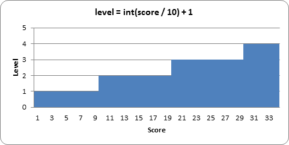
To calculate the falling frequency, we start with a base time of 0.27 (meaning that the piece will naturally fall once every 0.27 seconds). Then we multiply the level by 0.02, and subtract that from the 0.27 base time. So on level 1, we subtract 0.02 * 1 (that is, 0.02) from 0.27 to get 0.25. On level 2, we subtract 0.02 * 2 (that is, 0.04) to get 0.23. You can think of the level * 0.02 part of the equation as “for every level, the piece will fall 0.02 seconds faster than the previous level.”
We can also make a graph showing how fast the pieces will fall at each level of the game:

You can see that at level 14, the falling frequency will be less than 0. This won’t cause any bugs with our code, because line 277 just checks that the elapsed time since the falling piece last fell one space is greater than the calculated falling frequency. So if the falling frequency is negative, then the condition on line 277 will always be True and the piece will fall on every iteration of the game loop. From level 14 and beyond, the piece cannot fall any faster.
If the FPS is set at 25, this means that at reaching level 14, the falling piece will fall 25 spaces a second. Considering that the board is only 20 spaces tall, that means the player will have less than a second to set each piece!
If you want the pieces to start (if you can see what I mean) falling faster at a slower rate, you can change the equation that the calculateLevelAndFallFreq() uses. For example, let’s say line 360 was this:
360. fallFreq = 0.27 - (level * 0.01)
In the above case, the pieces would only fall 0.01 seconds faster on each level rather than 0.02 seconds faster. The graph would look like this (the original line is also in the graph in light grey):
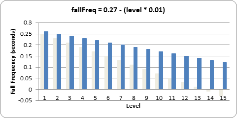
As you can see, with this new equation, level 14 would only be as hard as the original level 7. You can change the game to be as difficult or easy as you like by changing the equations in calculateLevelAndFallFreq().
363. def getNewPiece():
364. # return a random new piece in a random rotation and color
365. shape = random.choice(list(SHAPES.keys()))
366. newPiece = {'shape': shape,
367. 'rotation': random.randint(0, len(SHAPES[shape]) - 1),
368. 'x': int(BOARDWIDTH / 2) - int(TEMPLATEWIDTH / 2),
369. 'y': -2, # start it above the board (i.e. less than 0)
370. 'color': random.randint(0, len(COLORS)-1)}
371. return newPiece
The getNewPiece() function generates a random piece that is positioned at the top of the board. First, to randomly choose the shape of the piece, we create a list of all the possible shapes by calling list(SHAPES.keys()) on line 365. The keys() dictionary method returns a value of the data type “dict_keys”, which must be converted to a list value with the list() function before being passed to random.choice(). This is because the random.choice() function only accepts list values for its parameter. The random.choice() function then randomly returns the value of an item from the list.
The piece data structures are simply a dictionary value with the keys 'shape', 'rotation', 'x', 'y', and 'color'.
The value for the 'rotation' key is a random integer between 0 to one less than however many possible rotations there are for that shape. The number of rotations for a shape can be found from the expression len(SHAPES[shape]).
Notice that we don’t store the list of string values (like the ones store in the constants like S_SHAPE_TEMPLATE) in each piece data structure to represent the boxes of each piece. Instead, we just store an index for the shape and rotation which refer to the PIECES constant.
The 'x' key’s value is always set to the middle of the board (also accounting for the width of the pieces themselves, which is found from our TEMPLATEWIDTH constant). The 'y' key’s value is always set to -2 to place it slightly above the board. (The top row of the board is row 0.)
Since the COLORS constant is a tuple of the different colors, selecting a random number from 0 to the length of COLORS (subtracting one) will give us a random index value for the piece’s color.
Once all of the values in the newPiece dictionary are set, the getNewPiece() function returns newPiece.
374. def addToBoard(board, piece):
375. # fill in the board based on piece's location, shape, and rotation
376. for x in range(TEMPLATEWIDTH):
377. for y in range(TEMPLATEHEIGHT):
378. if SHAPES[piece['shape']][piece['rotation']][y][x] != BLANK:
379. board[x + piece['x']][y + piece['y']] = piece['color']
The board data structure is a data representation for the rectangular space where pieces that have previously landed are tracked. The currently falling piece is not marked on the board data structure. What the addToBoard() function does is takes a piece data structure and adds its boxes to the board data structure. This happens after a piece has landed.
The nested for loops on lines 376 and 377 go through every space in the piece data structure, and if it finds a box in the space (line 378), it adds it to the board (line 379).
382. def getBlankBoard():
383. # create and return a new blank board data structure
384. board = []
385. for i in range(BOARDWIDTH):
386. board.append([BLANK] * BOARDHEIGHT)
387. return board
The data structure used for the board is fairly simple: it’s a list of lists of values. If the value is the same as the value in BLANK, then it is an empty space. If the value is an integer, then it represents a box that is the color that the integer indexes in the COLORS constant list. That is, 0 is blue, 1 is green, 2 is red, and 3 is yellow.
In order to create a blank board, list replication is used to create the lists of BLANK values which represents a column. This is done on line 386. One of these lists is created for each of the columns in the board (this is what the for loop on line 385 does).
390. def isOnBoard(x, y):
391. return x >= 0 and x < BOARDWIDTH and y < BOARDHEIGHT
The isOnBoard() is a simple function which checks that the XY coordinates that are passed represent valid values that exist on the board. As long as both the XY coordinates are not less 0 or greater than or equal to the BOARDWIDTH and BOARDHEIGHT constants, then the function returns True.
394. def isValidPosition(board, piece, adjX=0, adjY=0):
395. # Return True if the piece is within the board and not colliding
396. for x in range(TEMPLATEWIDTH):
397. for y in range(TEMPLATEHEIGHT):
398. isAboveBoard = y + piece['y'] + adjY < 0
399. if isAboveBoard or SHAPES[piece['shape']][piece['rotation']][y][x] == BLANK:
400. continue
The isValidPosition() function is given a board data structure and a piece data structure, and returns True if all the boxes in the piece are both on the board and not overlapping any boxes on the board. This is done by taking the piece’s XY coordinates (which is really the coordinate of the upper right box on the 5x5 boxes for the piece) and adding the coordinate inside the piece data structure. Here’s a couple pictures to help illustrate this:
|
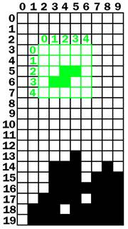 |
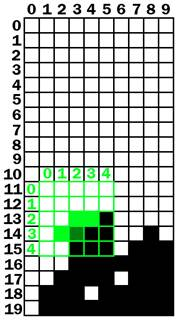 |
|
The board with a falling piece in a valid position. |
The board with the falling piece in an invalid position. |
On the left board, the falling piece’s (that is, the top left corner of the falling piece’s) XY coordinates are (2, 3) on the board. But the boxes inside the falling piece’s coordinate system have their own coordinates. To find the “board” coordinates of these pieces, we just have to add the “board” coordinates of the falling piece’s top left box and the “piece” coordinates of the boxes.
On the left board, the falling piece’s boxes are at the following “piece” coordinates:
(2, 2) (3, 2) (1, 3) (2, 3)
When we add the (2, 3) coordinate (the piece’s coordinates on the board) to these coordinates, it looks like this:
(2 + 2, 2 + 3) (3 + 2, 2 + 3) (1 + 2, 3 + 3) (2 + 2, 3 + 3)
After adding the (2, 3) coordinate the boxes are at the following “board” coordinates:
(4, 5) (5, 5) (3, 6) (4, 6)
And now that we can figure out where the falling piece’s boxes are as board coordinates, we can see if they overlap with the landed boxes that are already on the board. The nested for loops on lines 396 and 397 go through each of the possible coordinates on the falling piece.
We want to check if a box of the falling piece is either off of the board or overlapping a box on the board. (Although one exception is if the box is above the board, which is where it could be when the falling piece just begins falling.) Line 398 creates a variable named isAboveBoard that is set to True if the box on the falling piece at the coordinates pointed to be x and y is above the board. Otherwise it is set to False.
The if statement on line 399 checks if the space on the piece is above the board or is blank. If either of those is True, then the code executes a continue statement and goes to the next iteration. (Note that the end of line 399 has [y][x] instead of [x][y]. This is because the coordinates in the PIECES data structure are reversed. See the previous section, “Setting Up the Piece Templates”).
401. if not isOnBoard(x + piece['x'] + adjX, y + piece['y'] + adjY):
402. return False
403. if board[x + piece['x'] + adjX][y + piece['y'] + adjY] != BLANK:
404. return False
405. return True
The if statement on line 401 checks that the piece’s box is not located on the board. The if statement on line 403 checks that the board space the piece’s box is located is not blank. If either of these conditions are True, then the isValidPosition() function will return False. Notice that these if statements also adjust the coordinates for the adjX and adjY parameters that were passed in to the function.
If the code goes through the nested for loop and hasn’t found a reason to return False, then the position of the piece must be valid and so the function returns True on line 405.
407. def isCompleteLine(board, y):
408. # Return True if the line filled with boxes with no gaps.
409. for x in range(BOARDWIDTH):
410. if board[x][y] == BLANK:
411. return False
412. return True
The isCompleteLine does a simple check at the row specified by the y parameter. A row on the board is considered to be “complete” when every space is filled by a box. The for loop on line 409 goes through each space in the row. If a space is blank (which is caused by it having the same value as the BLANK constant), then the function return False.
415. def removeCompleteLines(board):
416. # Remove any completed lines on the board, move everything above them down, and return the number of complete lines.
417. numLinesRemoved = 0
418. y = BOARDHEIGHT - 1 # start y at the bottom of the board
419. while y >= 0:
The removeCompleteLines() function will find any complete lines in the passed board data structure, remove the lines, and then shift all the boxes on the board above that line down one row. The function will return the number of lines that were removed (which is tracked by the numLinesRemoved variable) so that this can be added to the score.
The way this function works is by running in a loop starting on line 419 with the y variable starting at the lowest row (which is BOARDHEIGHT - 1). Whenever the row specified by y is not complete, y will be decremented to the next highest row. The loop finally stops once y reaches -1.
420. if isCompleteLine(board, y):
421. # Remove the line and pull boxes down by one line.
422. for pullDownY in range(y, 0, -1):
423. for x in range(BOARDWIDTH):
424. board[x][pullDownY] = board[x][pullDownY-1]
425. # Set very top line to blank.
426. for x in range(BOARDWIDTH):
427. board[x][0] = BLANK
428. numLinesRemoved += 1
429. # Note on the next iteration of the loop, y is the same.
430. # This is so that if the line that was pulled down is also
431. # complete, it will be removed.
432. else:
433. y -= 1 # move on to check next row up
434. return numLinesRemoved
The isCompleteLine() function will return True if the line that y is referring to is complete. In that case, the program needs to copy the values of each row above the removed line to the next lowest line. This is what the for loop on line 422 does (which is why its call to the range() function begins at y, rather than 0. Also note that it uses the three argument form of range(), so that the list it returns starts at y, ends at 0, and after each iteration “increases” by -1.)
Let’s look at the following example. To save space, only the top five rows of the board are shown. Row 3 is a complete line, which means that all the rows above it (row 2, 1, and 0) must be “pulled down”. First, row 2 is copied down to row 3. The board on the right shows what the board will look like after this is done:
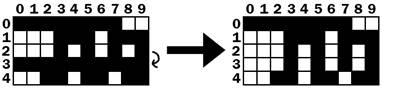
This “pulling down” is really just copying the higher row’s values to the row below it on line 424. After row 2 is copied to row 3, then row 1 is copied to row 2 followed by row 0 copied to row 1:
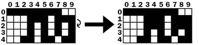
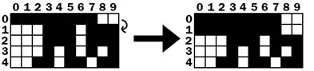
Row 0 (the row at the very top) doesn’t have a row above it to copy values down. But row 0 doesn’t need a row copied to it, it just needs all the spaces set to BLANK. This is what lines 426 and 427 do. After that, the board will have changed from the board shown below on the left to the board shown below on the right:
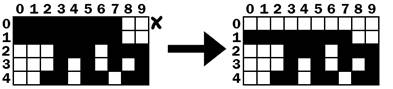
After the complete line is removed, the execution reaches the end of the while loop that started on line 419, so the execution jumps back to the beginning of the loop. Note that at no point when the line was being removed and the rows being pulled down that the y variable changed at all. So on the next iteration, the y variable is pointing to the same row as before.
This is needed because if there were two complete lines, then the second complete line would have been pulled down and would also have to be removed. The code will then remove this complete line, and then go to the next iteration. It is only when there is not a completed line that the y variable is decremented on line 433. Once the y variable has been decremented all the way to 0, the execution will exit the while loop.
437. def convertToPixelCoords(boxx, boxy):
438. # Convert the given xy coordinates of the board to xy
439. # coordinates of the location on the screen.
440. return (XMARGIN + (boxx * BOXSIZE)), (TOPMARGIN + (boxy * BOXSIZE))
This helper function converts the board’s box coordinates to pixel coordinates. This function works the same way to the other “convert coordinates” functions used in the previous game programs.
443. def drawBox(boxx, boxy, color, pixelx=None, pixely=None):
444. # draw a single box (each tetromino piece has four boxes)
445. # at xy coordinates on the board. Or, if pixelx & pixely
446. # are specified, draw to the pixel coordinates stored in
447. # pixelx & pixely (this is used for the "Next" piece).
448. if color == BLANK:
449. return
450. if pixelx == None and pixely == None:
451. pixelx, pixely = convertToPixelCoords(boxx, boxy)
452. pygame.draw.rect(DISPLAYSURF, COLORS[color], (pixelx + 1, pixely + 1, BOXSIZE - 1, BOXSIZE - 1))
453. pygame.draw.rect(DISPLAYSURF, LIGHTCOLORS[color], (pixelx + 1, pixely + 1, BOXSIZE - 4, BOXSIZE - 4))
The drawBox() function draws a single box on the screen. The function can receive boxx and boxy parameters for board coordinates where the box should be drawn. However, if the pixelx and pixely parameters are specified, then these pixel coordinates will override the boxx and boxy parameters. The pixelx and pixely parameters are used to draw the boxes of the “Next” piece, which is not on the board.
If the pixelx and pixely parameters are not set, then they will be set to None by default when the function first begins. Then the if statement on line 450 will overwrite the None values with the return values from convertToPixelCoords(). This call gets the pixel coordinates of the board coordinates specified by boxx and boxy.
The code won’t fill the entire box’s space with color. To have a black outline in between the boxes of a piece, the left and top parameters in the pygame.draw.rect() call have + 1 added to them and a - 1 is added to the width and height parameters. In order to draw the highlighted box, first the box is drawn with the darker color on line 452. Then, a slightly smaller box is drawn on top of the darker box on line 453.
456. def drawBoard(board):
457. # draw the border around the board
458. pygame.draw.rect(DISPLAYSURF, BORDERCOLOR, (XMARGIN - 3, TOPMARGIN - 7, (BOARDWIDTH * BOXSIZE) + 8, (BOARDHEIGHT * BOXSIZE) + 8), 5)
459.
460. # fill the background of the board
461. pygame.draw.rect(DISPLAYSURF, BGCOLOR, (XMARGIN, TOPMARGIN, BOXSIZE * BOARDWIDTH, BOXSIZE * BOARDHEIGHT))
462. # draw the individual boxes on the board
463. for x in range(BOARDWIDTH):
464. for y in range(BOARDHEIGHT):
465. drawBox(x, y, board[x][y])
The drawBoard() function is responsible for calling the drawing functions for the board’s border and all the boxes on the board. First the board’s border is drawn on DISPLAYSURF, followed by the background color of the board. Then a call to drawBox() is made for each space on the board. The drawBox() function is smart enough to leave out the box if board[x][y] is set to BLANK.
468. def drawStatus(score, level):
469. # draw the score text
470. scoreSurf = BASICFONT.render('Score: %s' % score, True, TEXTCOLOR)
471. scoreRect = scoreSurf.get_rect()
472. scoreRect.topleft = (WINDOWWIDTH - 150, 20)
473. DISPLAYSURF.blit(scoreSurf, scoreRect)
474.
475. # draw the level text
476. levelSurf = BASICFONT.render('Level: %s' % level, True, TEXTCOLOR)
477. levelRect = levelSurf.get_rect()
478. levelRect.topleft = (WINDOWWIDTH - 150, 50)
479. DISPLAYSURF.blit(levelSurf, levelRect)
The drawStatus() function is responsible for rendering the text for the “Score:” and “Level:” information that appears in the upper right of the corner of the screen.
482. def drawPiece(piece, pixelx=None, pixely=None):
483. shapeToDraw = SHAPES[piece['shape']][piece['rotation']]
484. if pixelx == None and pixely == None:
485. # if pixelx & pixely hasn't been specified, use the location stored in the piece data structure
486. pixelx, pixely = convertToPixelCoords(piece['x'], piece['y'])
487.
488. # draw each of the blocks that make up the piece
489. for x in range(TEMPLATEWIDTH):
490. for y in range(TEMPLATEHEIGHT):
491. if shapeToDraw[y][x] != BLANK:
492. drawBox(None, None, piece['color'], pixelx + (x * BOXSIZE), pixely + (y * BOXSIZE))
The drawPiece() function will draw the boxes of a piece according to the piece data structure that is passed to it. This function will be used to draw the falling piece and the “Next” piece. Since the piece data structure will contain all of the shape, position, rotation, and color information, nothing else besides the piece data structure needs to be passed to the function.
However, the “Next” piece is not drawn on the board. In this case, we ignore the position information stored inside the piece data structure and instead let the caller of the drawPiece() function pass in arguments for the optional pixelx and pixely parameters to specify where exactly on the window the piece should be drawn.
If no pixelx and pixely arguments are passed in, then lines 484 and 486 will overwrite those variables with the return values of convertToPixelCoords() call.
The nested for loops on line 489 and 490 will then call drawBox() for each box of the piece that needs to be drawn.
495. def drawNextPiece(piece):
496. # draw the "next" text
497. nextSurf = BASICFONT.render('Next:', True, TEXTCOLOR)
498. nextRect = nextSurf.get_rect()
499. nextRect.topleft = (WINDOWWIDTH - 120, 80)
500. DISPLAYSURF.blit(nextSurf, nextRect)
501. # draw the "next" piece
502. drawPiece(piece, pixelx=WINDOWWIDTH-120, pixely=100)
503.
504.
505. if __name__ == '__main__':
506. main()
The drawNextPiece() draws the “Next” piece in the upper right corner of the screen. It does this by calling the drawPiece() function and passing in arguments for drawPiece()’s pixelx and pixely parameters.
That’s the last function. Line 505 and 506 are run after all the function definitions have been executed, and then the main() function is called to begin the main part of the program.
The Tetromino game (which is a clone of the more popular game, “Tetris”) is pretty easy to explain to someone in English: “Blocks fall from the top of a board, and the player moves and rotates them so that they form complete lines. The complete lines disappear (giving the player points) and the lines above them move down. The game keeps going until the blocks fill up the entire board and the player loses.”
Explaining it in plain English is one thing, but when we have to tell a computer exactly what to do there are many details we have to fill in. The original Tetris game was designed and programmed one person, Alex Pajitnov, in the Soviet Union in 1984. The game is simple, fun, and addictive. It is one of the most popular video games ever made, and has sold 100 million copies with many people creating their own clones and variations of it.
And it was all created by one person who knew how to program.
With the right idea and some programming knowledge you can create incredibly fun games. And with some practice, you will be able to turn your game ideas into real programs that might become as popular as Tetris!
For additional programming practice, you can download buggy versions of Tetromino from http://invpy.com/buggy/tetromino and try to figure out how to fix the bugs.
There are also variations of the Tetromino game on the book’s website. “Pentomino” is a version of this game with pieces made up of five boxes. There is also “Tetromino for Idiots”, where all of the pieces are made up of just one box.
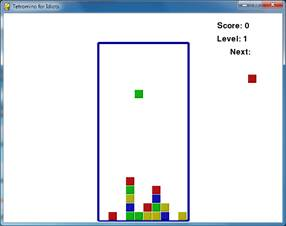
These variations can be downloaded from:
· http://invpy.com/pentomino.py
· http://invpy.com/tetrominoforidiots.py